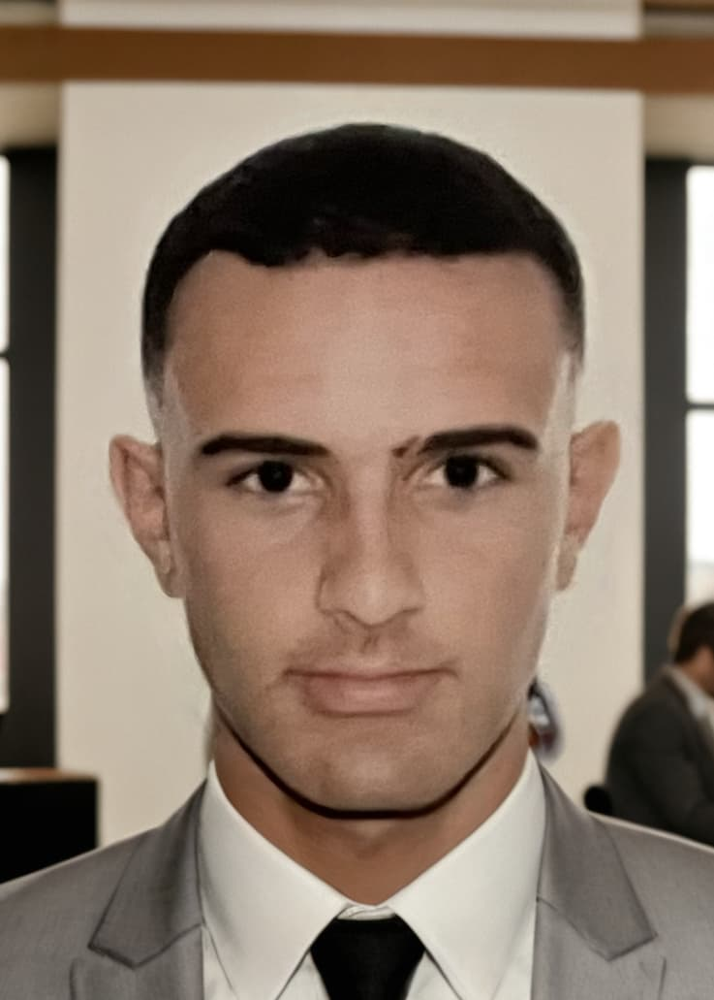

Nestor Gomez | WDD 130
Hi, my name is Nestor, and I’d like to welcome you to my WDD 130 class page! This site is a showcase of the projects, assignments, and activities I will complete throughout the course as I learn the fundamentals of web design and development. From writing HTML and styling with CSS to exploring layout techniques and building responsive pages, each project represents a step forward in my journey. This page is more than just a collection of schoolwork. It is a reflection of the skills I am developing and the creativity I am beginning to apply in web development. Feel free to explore and see what I have been working on. As you browse through this site, you will get a glimpse of the concepts I have been studying and how I have put them into practice. Each section is designed to highlight not only what I have learned but also how I have grown as a developer, both technically and creatively. Whether you are a fellow student, instructor, or just a curious visitor, I hope you enjoy seeing how my skills have evolved over time. Thank you for stopping by, and I invite you to check back often as I continue to build and improve my work.